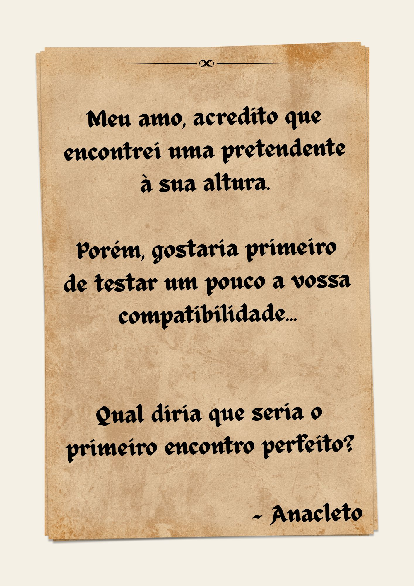

Era uma vez um príncipe feliz, que vivia num reino longínquo... mas que tinha tudo o que príncipe podia querer e pedir (até uma Casa da Burra).
Porém, com o passar dos anos o jovem infante começou a sentir que algo lhe faltava... queria algo que não conseguiu encontrar no seu reino. Percebeu que queria encontrar uma princesa! "Mas onde?" pergunta ele aos céus.
Sem resposta dos astros, virou-se então para o seu fiel conselheiro: um pato real e muito sábio chamado Anacleto. O dito cujo, entre grasnadelas e goles de cevada, prometeu-lhe ajuda. "Meu Infante, irei procurar quem procuras. Amanhã terás um bilhete meu, com informações sobre quem ela é e como encontrá-la. Mas terás de provar que és digno..."
No dia seguinte, no peitoril da janela do castelo, repousava um pergaminho com letras miudinhas e penas coladas no canto. Seria a primeira pista?
